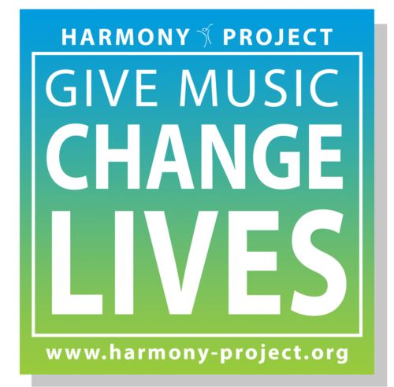
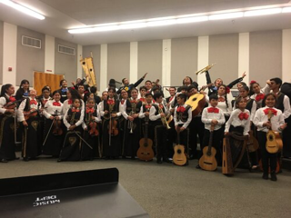
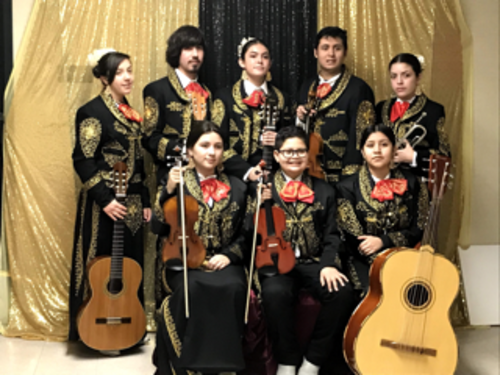
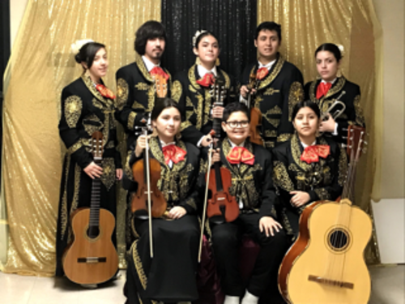

Jazmin Mejia
My name is Jazmin Mejia and I am currently 18 years old. I attend the University of California, Riverside. My current major is Chicano Studies. I am Mexican American. My parents were born in Mexico and they came to the United States for a better life. They wanted a better life for themselves and their children. I have three siblings and they are my two brothers and my one sister. My dad has worked hard to get where he is. He is a construction worker and my dad, all my uncles, and even my cousins' jobs involve construction. My brothers would also accompany my dad to work. Working in this field is mostly male-dominated, and since I could remember my dad would take my older brother, even at the young age of 10, to work with him. I was never told to accompany him because since I was a girl I could get hurt and I was not allowed to be around heavy tools or equipment. Since my dad was the main caretaker of my family, I never had to get a job because I had food on the table and a roof over my head. I had everything I needed and getting a job was not a necessity. I also had no time to work. I was always busy with extracurricular activities. Since the age of 8 I was a part of a music program called Harmony Project. It's a music program where I learned how to play the viola and it helped me hone in my time management skills and presentation skills. In class we were taught how to read music and the value of each note. Knowing how to read music and practicing does not come easy to a person because it takes time and effort to implement the basics that I learned in class with my actual instrument. Because class time is limited, I needed to set aside time to practice and reinforce what I had learned. I had one hour classes, two times a week, and then I had orchestra for three hours on saturday. Setting aside time was difficult because I needed to make sure that my homework was done or if I had finished my chores but still take time for myself to watch TV or do other activities. I also joined a mariachi band so that took up more of my time because we had practice for two hours, two times a week and sometimes I had concerts during the weekend and at times even during the week. My music program took place during the school year and every semester we had recitals so our parents could see how much we have progressed and what we had been working on during the semester. My class and I had to go up on stage and perform in front of all the other parents and students and from those performances and the mariachi ones, because they started when I was young, I didn’t get nervous or have stage fright when I needed to do presentations for school. These were huge crowds I needed to perform in front of at times, and for school it was usually just my class. My highschool is project based so there were plenty of presentations that I needed to do and it definitely helped having that experience.
Experience
Developer
• I did volenteer work and taught kids how to play an instrument.
• I was a part of a mariachi.
• I was a part of a symphony orchestra.
Education
UC Riverside
Portfolio




